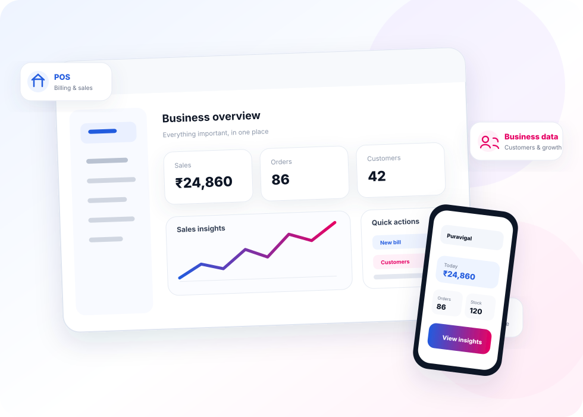
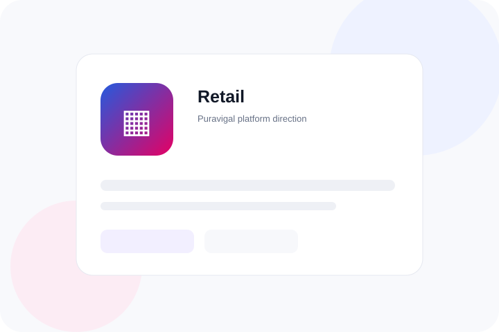

Simple software.
Built for real business.
Puravigal is building practical software for micro and small businesses — starting with POS and growing into a connected platform, one useful product at a time.

Meet the first product in the Puravigal platform.
We are starting with one product that solves an everyday problem well — then building the platform around what businesses actually need.
Everything your counter needs.
Nothing your team doesn't.
Puravigal POS brings billing, products, inventory, purchases, customers and sales visibility into one focused workflow for small businesses.

Each screen should have a reason to exist.
Turn everyday transactions into useful visibility.
Start with one product and add capability when it earns its place.
One platform. Different ways of doing business.
The business may be different. The need for simple, dependable software is not.

Retail
Products, stock, billing and everyday sales.

Restaurant
Fast counter operations and clear daily visibility.

Café
Quick service workflows built around the counter.

Mobile shop
Devices, accessories, prices, stock and customer sales.

Supermarket
Wider catalogues, stock and faster checkout.

Grocery & provision
Simple billing and stock for neighbourhood stores.
Less software noise.
More business clarity.
Designed around the work
We start from real workflows, not from a checklist of features.
Made for small teams
Clear navigation, practical screens and less time spent learning the software.
Built to become a platform
Puravigal POS is the first step toward a connected business software ecosystem.
About Puravigal
What is Puravigal?
Puravigal is a growing SaaS platform focused on practical software for micro and small businesses.
What is the first Puravigal product?
Puravigal POS is the first product, focused on everyday billing, products, inventory, purchases, customers and sales visibility.
Will Puravigal have more products?
Yes, the platform is designed to expand over time. Future products will be introduced only when they are ready for customers.
Can I start with Puravigal POS?
Yes. Start with the free entry experience and explore the POS workflow before choosing the Standard plan.
Give everyday business work a better home.
Start with Puravigal POS today and build from there.